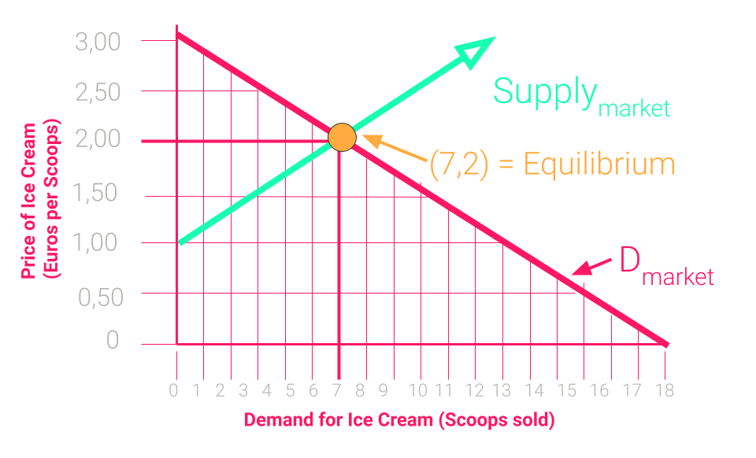
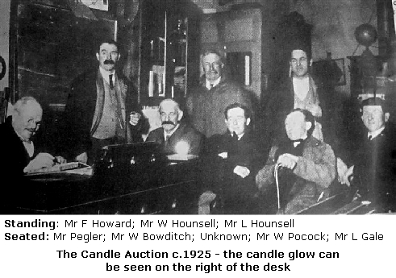

<!DOCTYPE html>
<html lang="en">
  <head>
    <meta charset="utf-8" />
    <meta name="viewport" content="width=device-width, initial-scale=1.0, maximum-scale=1.0, user-scalable=no" />

    <title>Price Finding Mechanisms</title>
    <link rel="shortcut icon" href="./../../../favicon.ico" />
    <link rel="stylesheet" href="./../../../dist/reset.css" />
    <link rel="stylesheet" href="./../../../dist/reveal.css" />
    <link rel="stylesheet" href="./../../../assets/styles/polkadot-theme.css" id="theme" />
    <link rel="stylesheet" href="./../../../css/highlight/shades-of-purple.css" />

    <link rel="stylesheet" href="./../../.././assets/styles/custom-classes.css" />
    <link rel="stylesheet" href="./../../.././assets/styles/polkadot-theme-base.css" />
    <link rel="stylesheet" href="./../../.././assets/styles/PBA-theme.css" />
    <link rel="stylesheet" href="./../../.././plugin/design-system/index.css" />

  </head>
  <body class="site">
    <header class="site-header">
      <a href="">
        
      </a>
      
    </header>
    <main class="site-reveal reveal">
      <article class="slides">
        <section  data-markdown><script type="text/template">

# Price Finding Mechanisms
</script></section><section  data-markdown><script type="text/template">
## Introduction

- A central topic of economics is _price finding_ in markets.
- The process by which a buyer and a seller agree on the price of a good.
- As we saw yesterday, a market price must balance supply and demand.
  - Demand: number of items bought by consumers at a given price.
  - Supply: number of items produced at a given price.
</script></section><section  data-markdown><script type="text/template">
## Supply and demand


</script></section><section  data-markdown><script type="text/template">
## Supply and Demand

- Supply and demand help us understand price formation from a general perspective. They describe a _macro tendency_ of price-finding processes.
- However, they do not help much to understand _how exactly_ an individual firm can set up the prices for the good it sells.
- HOW are prices set in markets?

<aside class="notes"><ul>
<li>Difference between macro economics and micro economics: two totally different worlds</li>
</ul>
</aside></script></section><section  data-markdown><script type="text/template">
## Supply and Demand

- Consider a single firm that wants to sell one item of some good or asset.
- There are many potential buyers, each with a personal valuation for the item.
- How does the firm _optimally_ sell its goods?
- If the firm knows the buyers' valuations: sell to the buyer with highest valuation and charge a price equal to that valuation.

<aside class="notes"><ul>
<li>... or slightly below that valuation. For simplicity, throughout the talk we assume that a buyer will purchase the item if the price is below or equal to her valuation. If it is equal, the buyer would be <em>indifferent</em> between buying and not buying.
Finding</li>
</ul>
</aside></script></section><section  data-markdown><script type="text/template">
## Supply and Demand

- However, in reality firms hardly know the exact valuations of the buyers.
- If the good is standardized and sales happen frequently, it is convenient for the firm to just post a price.
- For rarer goods that don't trade hands frequently, we often see a different mechanism: auctions.
- Auctions are also often used in a blockchain context: NFTs, allocation of block space, etc.

<aside class="notes"><ul>
<li>A standardized good is any good that you buy daily in the supermarket.</li>
<li>A rare good is e.g. a famous painting, a radio frequency for broadcasting, etc.</li>
</ul>
</aside></script></section><section  data-markdown><script type="text/template">
## Supply and Demand


<aside class="notes"><p>Source: <a href="https://funkypriceguide.com/collectible/512-gold-hopper-2018-sdcc-fundays/">https://funkypriceguide.com/collectible/512-gold-hopper-2018-sdcc-fundays/</a></p>
</aside></script></section><section  data-markdown><script type="text/template">
## Supply and Demand

- In this lecture we see in what sense auctions are superior to posting a price.
- We analyze the four most important auction formats and learn important results of auction theory:
  - Truthful bidding in a second-price auction.
  - The characterization of optimal auctions.
  - The revenue-equivalence theorem.

<aside class="notes"><ul>
<li>Bids do not typically reflect the actual valuations of the bidders for the good, i.e. bids aren&#39;t truthful, but there an auction where they tend to be.</li>
<li>How to maximize revenue for the seller.</li>
</ul>
</aside></script></section><section  data-markdown><script type="text/template">
## Price Posting

- We consider the following setup:
  - a firm with a good to sell, and
  - two potential buyers, Alice and Bob,
  - with individual valuations $v_A, v_B$ for the good.
- If these valuations are known to the firm: approach the higher-valuing buyer and charge a price $p=\max\{v_A,v_B\}$.
- If the valuations are not known to the firm, the problem is trickier...

<aside class="notes"><p>Image Source: <a href="https://funkypriceguide.com/collectible/512-gold-hopper-2018-sdcc-fundays/">https://funkypriceguide.com/collectible/512-gold-hopper-2018-sdcc-fundays/</a></p>
</aside></script></section><section  data-markdown><script type="text/template">
## Price Posting

Abstraction to model a scenario with incomplete information:

- Buyers have random valuations (say, between 0 and 1).
- The valuations are independent from one another.
- Each buyer knows her/his own valuation but not that of the other buyer.

Consider the following setup:

- a firm with a good to sell, and
- two potential buyers, Alice and Bob,
- with individual valuations $v_A, v_B \in [0,1]$ for the good.
- If these valuations are known to the firm: approach the higher-valuing buyer and charge a price $p=\max\{v_A,v_B\}$.
- If the valuations are not known to the firm, the problem is trickier.

<aside class="notes"><ul>
<li>We saw the notion of an abstraction already in game theory class: we lose a bit in realism, but gain in structure which allows us to make precise statements, and develop a richer theory. The intuition and conclusions still apply in real life.</li>
<li>We assume valuations are <em>uniformly distributed</em> between 0 and 1, $Pr{v_i \leq x}$ is the probability that the randomly drawn value of valuation $v_i$ is below $x$.</li>
<li>Uniform distribution is just for pedagogical reasons; standard model allows for more general distributions.</li>
</ul>
</aside></script></section><section  data-markdown><script type="text/template">
## Price Posting

The firm posts a price $p$ and sells the item to whomever accepts it.
What is the optimal price $p$ for the firm?

- A buyer accepts it if it is lower than her valuation, $p\leq v_i$.
- The chance that at least one of the two valuations is below $p$ is $$(1-p^2).$$
- Hence the firm's revenue is $$p \cdot ( 1-p^2).$$

The important thing is that revenue function is _concave_.

<aside class="notes"><ul>
<li>If both buyers accept the posted price, we assume the firm selects a random buyer to trade with.</li>
<li>The proof of this and all other math formulas can be found in the slides, for anyone interested.</li>
<li>Assuming that 100% of the sale price is profit for the seller, this profit is<ul>
<li>$p$ in case of selling, $0$ otherwise, where</li>
<li>$(1-p^2)$ is the probability of selling the item.</li>
<li>To see this probability, consider conversely that the probability that none of the buyers accepts the price must be $p^2$, because each valuation must be below $p$, and these are two individual events each happening with probability $p$ (recall: valuations are uniformly distributed between 0 and 1).</li>
</ul>
</li>
</ul>
<ul>
<li>$Pr{v_i \leq x}$ is the probability that the randomly drawn value of valuation $v_i$ is below $x$.</li>
<li>Independent values will be important: when is this (not) a sensible assumption? (Example: oil drilling rights auctions, ...)</li>
<li>Uniform distribution is just for pedagogical reasons; standard model allows for more general distributions.</li>
</ul>
</aside></script></section><section  data-markdown><script type="text/template">
## Price Posting

<widget-columns>
<widget-column>

- This is a graph of the firm's revenue.
- At the optimum, revenue is approximately $0.38$.
- Keep this number in mind.
  We will see that an auction can do better.

</widget-column>

<widget-column>


</widget-column>
</widget-columns>

<aside class="notes"><ul>
<li>Prices, valuations, and revenue are given in the same currency unit, say, USD.</li>
<li>How do we maximize the revenue function $f(p)=p ( 1-p^2)$?<ul>
<li>The function has a unique peak.</li>
<li>So, at the maximum, the first derivative must be zero.</li>
</ul>
</li>
</ul>
<ul>
<li>Hence the function is maximized for a $p$ satisfying $$ f&#39;(p)=1-p^2 - 2p^2 = 0 \implies p = \sqrt{1/3}.$$</li>
<li>Revenue is then $f(\sqrt{1/3})=\frac{2}{3}\sqrt{1/3}\approx 0.38.$</li>
</ul>
<ul>
<li>If both buyers accept the posted price, we assume the firm selects a random buyer to trade with.</li>
<li>Assuming that 100% of the sale price is profit for the seller, this profit is<ul>
<li>$p$ in case of selling, $0$ otherwise, where</li>
<li>$(1-p^2)$ is the probability of selling the item.</li>
<li>To see this probability, consider conversely that the probability that none of the buyers accepts the price must be $p^2$, because each valuation must be below $p$, and these are two individual events each happening with probability $p$ (recall: valuations are uniformly distributed).</li>
</ul>
</li>
</ul>
</aside></script></section><section  data-markdown><script type="text/template">
## Auctions

- The firm (_auctioneer_) asks the buyers (_bidders_) to submit bids,
  then allocates the item to one of them accordingly.
  The winner's payment is also a function of the bids.
- Intuition: auctions yield a higher revenue than price posting
  because they create _competition_ among buyers.

_An auction is a competitive game for buyers, where the seller makes the rules._


</script></section><section  data-markdown><script type="text/template">
## Auctions

- There are two broad classes:
  - _Static Auctions:_ all bidders submit their bids at the same time.
  - _Dynamic Auctions:_ bidders submit bids over time.
- The crucial difference is that in dynamic auctions,
  bidders can react to the bids of others.
- Static auctions are also called _sealed-bid auctions_, referring
  to a style where bids are submitted in sealed envelopes.
</script></section><section  data-markdown><script type="text/template">
## Auctions

Four auction formats you should know about:

- Static auctions
  - with a first-price payment rule
  - with a second-price payment rule
- Dynamic Auctions
  - English auction (a.k.a. ascending price)
  - Dutch auction (a.k.a. descending price)
</script></section><section  data-markdown><script type="text/template">
## Auctions

**Static first-price auction:** each bidder simultaneously gives offer
that cannot be changed later, i.e., the bid is metaphorically ‘sealed’.
The highest bidder wins and pays her bid.

- _Example:_ Four potential buyers are bidding on a racehorse.
  Each makes a secret bid and submits it to the auctioneer.
- The seller opens the bids: $30,000$ by $A$, $42,000$ by $B$,
  $38,000$ by $C$ and $49,000$ by $D$.
- The seller declares $D$ as winner and the price paid is $49,000$.
</script></section><section  data-markdown><script type="text/template">
## Auctions

**Static second-price auctions:** Again bids cannot be changed,
and highest bidder wins. But this time the winner
only pays the second-highest bid.

- _Same example:_ $D$ still wins but only pays $42,000$.
</script></section><section  data-markdown><script type="text/template">
## Auctions

_Why use a second-price payment rule?_

- _Everyone bids truthfully_, i.e., bids correspond to actual valuations.
- This is strategically simpler for bidders than in a first-price rule.
- Yet both payment rules raise the same expected revenue.

* With this rule everyone bids truthfully, i.e., bids correspond to actual valuations.
* This is strategically simpler for bidders than in a first-price rule.
* At the same time, both payment rules raise the same expected revenue.
</script></section><section  data-markdown><script type="text/template">
## Auctions

**English (ascending-price) auction:**

- the auctioneer continually raises the price,
- bidders that accept the price stay in the race,
- those that do not accept it leave, and
- the auction runs until a last bidder remains active.

This auction is very common in ... England.

_Notice_: It has a flavour of a second-price auction;
the price you pay is decided by another bidder.
In a sense these two auctions are _strategically equivalent._
</script></section><section  data-markdown><script type="text/template">
## Auctions

**Dutch (descending-price) auction:**,

- the auctioneer continually lowers the price
- until the first bidder accepts,
- this bidder wins and pays the price she accepted.

This auction is very common in ... the Netherlands (esp. tulip auctions).

_Notice_: It has a flavor of a first-price auction;
you pick the price you pay.
In a sense the two are _strategically equivalent._
</script></section><section  data-markdown><script type="text/template">
## Second-Price Auction

- We start our analysis with the auction that is strategically simplest.
- It is strategically simple because bidding your true valuation is optimal!
- Consider the two-bidder case from before:
  - Alice and Bob know their own valuations $v_A$ and $v_B$.
  - They are uniformly distributed between 0 and 1.
  - Each bidder submits a bid $b_A, b_B \geq 0$.
  - The highest bidder wins, paying the second-highest bid.
</script></section><section  data-markdown><script type="text/template">
## Second-Price Auction

**Truthful Equilibrium:** For each bidder, it is optimal to bid their actual valuation ($b_A=v_A$ and $b_B=v_B$) _no matter what the other bidder bids_.

**Proof:** Consider Alice (same proof for Bob).

- Suppose she bids under her valuation, $b_A < v_A$:
  _ If Bob bids low, $b_B< b_A$, then Alice wins and pays $b_B$,
  and raising her bid would not have changed anything.
  _ If Bob bids high, $b_B > v_A$, then Alice loses,
  and raising her bid up to $v_A$ would not have changed anything. \* If Bob bids in between $b_A$ and $v_A$, raising her bid
  up to $v_A$ would have made Alice go from a losing to winning.
  So an under-bidding strategy is (weakly) dominated by bidding $v_A$.
</script></section><section  data-markdown><script type="text/template">
## Second-Price Auction

**Proof: (cont'd)**

- Now suppose Alice bids over her valuation, $b_A> v_A$:
  _ If Bob bids low, $b_B< v_A$, then Alice wins and pays $b_B$,
  and lowering her bid to $v_A$ would not have changed anything.
  _ If Bob bids high, $b_B> b_A$, then Alice loses,
  and lowering her bid down to $v_A$ would not have changed anything. \* If Bob bids in between $v_A$ and $b_A$, Alice "wins" and pays $b_B\geq v_A$ (net loss) so lowering her bid to $v_A$ would make her lose, which is better.
  So an over-bidding strategy is weakly dominated by bidding $v_A$.
  Together, we have the claim.

<aside class="notes"><ul>
<li>A player&#39;s strategy $\alpha$ is <em>weakly dominated</em> by another strategy $\beta$ if $\beta$ produces an outcome that is at least as good as the outcome produced by $\alpha$, no matter what the other player does.</li>
<li>A player&#39;s strategy $\alpha$ is <em>strictly dominated</em> by another strategy $\beta$ if $\beta$ produces an outcome that is strictly better than the outcome produced by $\alpha$, no matter what the other player does.</li>
<li>The proof can be easily generalized to any number of bidders, to obtain that in a second-price auction, any bidder&#39;s strategy is weakly dominated by the strategy of bidding their own valuation.</li>
</ul>
</aside></script></section><section  data-markdown><script type="text/template">
## Second-Price Auction

**Expected revenue**

- The auctioneer's expected revenue in the second-price auction
  is the expected value of the second highest valuation.
- For two independent variables uniformly sampled between $0$ and $1$,
  the expected value of the minimum of these variables is $1/3\approx 0.33$.

* The auctioneer's expected revenue in the second-price auction is the expected value of the second highest valuation.
* For two independent variables uniformly sampled between $0$ and $1$, the expected value of the minimum of these variables is $1/3\approx 0.33$

<aside class="notes"><ul>
<li>Let $F(x)$ be the cumulative density function (CDF) of the lowest of Alice and Bob&#39;s valuations, $\min{v_A, v_B}$, where $v_A$ and $v_B$ are independent variables sampled uniformly from $[0,1]$.</li>
<li>By definition, for any $x$ in $[0,1]$, $F(x)$ is the probability that the lower valuation is below $x$, or equivalently, $g(x):=1-F(x)$ is the probability that both valuations are above $x$; clearly $g(x)=(1-x)^2$, and hence $F(x)=1-(1-x)^2$.</li>
<li>From the CDF, we can compute the probability density function (PDF) by derivation: $f(x)=\frac{d}{dx}F(x)=2(1-x)$.</li>
<li>Finally, the expected value is computed from the PDF with the integral formula
$$\int_0^1 x\cdot f(x) dx = 2\int_0^1 (x-x^2)dx=2\cdot \left(\frac{1}{2}-\frac{1}{3}\right)=\frac{1}{3}.$$</li>
</ul>
</aside></script></section><section  data-markdown><script type="text/template">
## Second-Price Auction

- This is not quite as good as posting a price
  (which provided revenue $0.38$). Why not?
- Because the auction we considered was not optimal for the auctioneer!
- The optimal auction involves a _reserve price_ $r>0$:
  - If no bid is above $r$, nobody wins.
  - If one bid is above $r$, the payment is $r$.
  - If both bids are above $r$, the payment is the second-highest bid.
</script></section><section  data-markdown><script type="text/template">
## Second-Price Auction

- Under a reserve price $r$, it is still optimal for all bidders to be truthful,
  hence the expected revenue is:

<widget-text style="font-size: .8em;">

\begin{align}
R(r)&= \frac{1}{3} + r^2 - \frac{4}{3}r^3
\end{align}

</widget-text>

<widget-text style="font-size: .8em;">

_(details in slides)_

</widget-text>

<aside class="notes"><ul>
<li>Clearly, the prob. that both valuations are below $r$ is $r^2$, the prob. that both valuations are above $r$ is $(1-r)^2$, and the prob. that $r$ is in between the valuations is $2r(1-r)$. You can check that these probabilities sum up to one.</li>
<li>Hence, out of the three terms above for the expected revenue, the first term is zero and the second term is $2r^2(1-r)$.</li>
<li>To compute the third term, we simply copy the integral formula for the expected value (from two slides ago), but we restrict the integration limits to $[r, 1]$:
\begin{align}
\int_r^1 x\cdot f(x) dx &amp;= 2\int_r^1 (x-x^2)dx\
&amp;=2\cdot \left[\frac{x^2}{2}-\frac{x^3} {3}\right]_r^1 \&amp;=\frac{1}{3} - r^2 + \frac{2}{3}r^3.
\end{align}</li>
<li>Putting all terms together, we obtain that the expected revenue is
$$R(r)=0+2r^2(1-r)+\left(\frac{1}{3} - r^2 + \frac{2}{3}r^3\right)=\frac{1}{3}+r^2-\frac{4}{3}r^3.$$</li>
</ul>
</aside></script></section><section  data-markdown><script type="text/template">
## Second-Price Auction


Plot of the auctioneer's expected revenue, $R(r)=1/3 + r^2 - 4r^3/3$.

<aside class="notes"><ul>
<li>In the plot, we see that revenue is increasing at $r=0$. So, a positive reserve price is optimal.</li>
<li>It turns out that the expected revenue is maximized for $r=0.5$.</li>
</ul>
</aside></script></section><section  data-markdown><script type="text/template">
## Second-Price Auction

- The expected revenue is maximal for $r=1/2$, at which point it is $\approx 0.42$.
- **Optimal Auctions (Myerson, 1981):** If the aim is to maximize revenue
  in an auction, then the auction will often have a reserve price!

<aside class="notes"><ul>
<li>If the auctioneer chooses a reveal price of $r=1/2$, their expected revenue is around $0.42$, so this auction is better than the posted price.</li>
<li>To maximize the auctioneer&#39;s expected revenue function $R(r)$ above:<ul>
<li>We evaluate the function at all the local extrema (minima and maxima).</li>
<li>Since the function is continuous and differentiable, the local extrema are found at the borders $r=0$ and $r=1$, and at the roots of the derivative $R&#39;(r)=2r-4r^2=0$. These roots are $r=0$ and $r=1/2$.</li>
<li>By inspecting all these points, we find that the global maximum is found at $r=1/2$, with a value of $R(1/2)=5/12\approx 0.42$.</li>
</ul>
</li>
<li>Literature: Myerson, Roger B. &quot;Optimal auction design.&quot; Mathematics of Operations Research 6, No. 1 (1981): 58-73.</li>
</ul>
</aside></script></section><section  data-markdown><script type="text/template">
## English Auction

Recall the rules:

- The auctioneer continually raises the price.
- At any price, you decide whether to stay or leave.
- If you leave, you may not return.
- If you are the last one in the auction you win
  and pay the price at which the second-to-last bidder left.
</script></section><section  data-markdown><script type="text/template">
## English Auction

- The English auction is **strategically equivalent** to the static second-price auction.
- Specifically, it is a (weakly) dominant strategy to stay in the auction until the price reaches one's valuation.
- Doing so, the expected payment is the also the same: the expected second highest valuation.
- Consequently, the English auction is also _revenue equivalent_ to the second-price auction for the auctioneer.

<aside class="notes"><ul>
<li>Why is staying until the price reaches your valuation weakly dominant?<ul>
<li>If you leave you get zero utility.</li>
<li>If you stay and the price is below your valuation, then your utility is above zero (or equal to zero).</li>
<li>If you stay and the price is above your valuation, your utility is negative.</li>
</ul>
</li>
</ul>
</aside></script></section><section  data-markdown><script type="text/template">
## Shill bidding

- While second-price and English auctions are popular among theorists,
  they are not so popular among practitioners.
- One reason is that they are prone to _shill-bidding_.
- Shill-bidder: bidder that acts on behalf of the auctioneer to drive up the price.
</script></section><section  data-markdown><script type="text/template">
## First-Price Auction

- The winning bidder pays her bid.
- The rest of the rules are the same as in the second-price auction; i.e.,
  - all bidders submit their bids simultaneously,
  - the highest bid wins.
</script></section><section  data-markdown><script type="text/template">
## First-Price Auction

**Equilibrium strategy:** In a first-price auction with two players, where the valuations are uniformly sampled between 0 and 1, _it is a Nash equilibrium_ for both bidders to bid half of their valuations, i.e., $b_A = v_A/2$ and $b_B=v_B/2$.

<aside class="notes"><ul>
<li>A Nash equilibrium, is a central concept in game theory, as we saw yesterday.</li>
<li>Recall: A set of strategies (one for each player) is a Nash equilibrium if no-one has an incentive to change their strategy.</li>
<li>In other words, a Nash equilibrium is a &quot;recommended strategy per player&quot;, such that if you assume that the other player will follow the recommendation, then the best you can do is also follow it. As the same is true for the other player, it is indeed a reasonable assumption to think the other player will follow the recommendation.</li>
<li>However, if the other player picks an unexpected strategy, your recommended strategy may be suboptimal. In this sense, a Nash equilibrium is a weaker concept than a (weakly or strongly) dominant strategy, in which the strategies of other players is irrelevant.</li>
</ul>
</aside></script></section><section  data-markdown><script type="text/template">
## First-Price Auction

**Proof:**

- Consider Alice, and assume Bob bids $b_B=v_B/2$.
- Alice's expected utility when submitting a bid $b$ is

$$(v_A-b)\cdot Pr[b_B \leq b] = (v_A-b)\cdot 2b.$$

- This value is maximized when $b=v_A/2$.

In summary, if Bob plays $b_B=v_B/2$, then it is optimal for Alice to play $b_A=v_A/2$, and vice-versa.
Together we have a Nash equilibrium.

<aside class="notes"><ul>
<li>This probability computation follows from the assumptions (made by Alice) that Bob&#39;s bid $b_B$ equals half his valuation $v_B$, and that his valuation is a variable sampled uniformly at random between 0 and 1.</li>
</ul>
<p>\begin{align}
(v_A-b)\cdot Pr[b_B \leq b] &amp;= (v_A-b)\cdot Pr[v_B/2 \leq b] \
&amp;= (v_A-b)\cdot Pr[v_B \leq 2b] \
&amp;= (v_A-b)\cdot 2b.
\end{align}</p>
</aside></script></section><section  data-markdown><script type="text/template">
### First-Price Auction

Bidding in the first-price auction is **not** truthful.

- Bidders _shade_ their bid; i.e., they bid below their value.
- Bidding truthfully can never be optimal: if you win, you earn nothing.
- Bidding below your value is strictly better because you win sometimes and when you do you have a strictly positive utility.
</script></section><section  data-markdown><script type="text/template">
## First-Price Auction

What is the expected revenue?

- It is reasonable to assume each bidder will bid half their valuation.
- Hence, the revenue is $\frac{1}{2}\max\{v_A, v_B\}$.
- The expected value of $\max\{v_A, v_B\}$ is $2/3$.
- Hence, the expected revenue is $1/3$.

This is the same as in the second-price auction!

<aside class="notes"><ul>
<li>Recall that the valuations $v_A$ and $v_B$ are assumed to be independent variables uniformly drawn from $[0,1]$.</li>
<li>The cumulative density function (CDF) of the higher valuation, $\max{v_A, v_B}$, is $F(x)=x^2$. This is because $F(x)$ is lower than $x$ only if both valuations are below $x$, and these are two independent events each happening with probability $x$.</li>
<li>Then, the probability density function (PDF) is $f(x)=F&#39;(x)=2x$.</li>
<li>And the formula for the expected value of $\max{v_A, v_B}$ is
$$R = \int\limits_0^1 x\cdot f(x)\mathrm d x = \int\limits_0^1 2x^2 \mathrm d v = \frac{2}{3}.$$</li>
</ul>
<ul>
<li>Recall that the valuations $v_A$ and $v_B$ are assumed to be independent variables uniformly drawn from $[0,1]$.</li>
<li>The cumulative density function (CDF) of the higher valuation, $\max{v_A, v_B}$, is $F(x)=x^2$. This is because $F(x)$ is lower than $x$ only if both valuations are below $x$, and these are two independent events each happening with probability $x$.</li>
<li>Then, the probability density function (PDF) is $f(x)=F&#39;(x)=2x$.</li>
<li>And the formula for the expected value of $\max{v_A, v_B}$ is
$$R = \int\limits_0^1 x\cdot f(x)\mathrm d x = \int\limits_0^1 2x^2 \mathrm d v = \frac{2}{3}.$$</li>
</ul>
</aside></script></section><section  data-markdown><script type="text/template">
## First-Price Auction

- **Revenue Equivalence Theorem (Myerson, 1981):** When valuations are independent and private as in our model, then _all auction mechanisms_ that allocate the good to the highest-valuing bidder in equilibrium are _revenue equivalent_.

<aside class="notes"><ul>
<li>For me, this solution is very surprising.</li>
<li>In a first-price auction, you bid below your valuation, but this magically cancels out with having to pay your full bid, instead of the second highest bid.</li>
</ul>
</aside></script></section><section  data-markdown><script type="text/template">
## Dutch Auction

Recall the rules:

- The auctioneer continually lowers the price.
- At any price, you can decide whether or not to accept the price.
- If you are the first to accept the price, you win and pay the price you just accepted.

* It turns out that the Dutch auction is strategically equivalent and revenue equivalent to the static first-price auction.
* The price that you accept in the Dutch auction corresponds to the price that you'd bid in a static first-price auction.
* The tradeoffs that the bidders face are very similar: take the current price or wait a bit at the risk of another bidder accepting first. It is an equilibrium to wait till the price is half your valuation.
</script></section><section  data-markdown><script type="text/template">
## Dutch Auction

- It turns out that the Dutch auction is strategically equivalent and revenue equivalent to the static first-price auction.
- The price that you accept in the Dutch auction corresponds to the price that you'd bid in a static first-price auction. It is an equilibrium to wait till the price is half your valuation.
</script></section><section  data-markdown><script type="text/template">
## Recap

<widget-columns>
<widget-column style="padding: 0">

**Analyzed important auction formats:**

- Static first-price auction.
- Static second-price auction.
- English auction.
- Dutch auction.

</widget-column>
<widget-column style="padding: 0">

**Learned under standard assumptions:**

- First-price and Dutch auctions are strategy equivalent.
- Second-price and English auctions are strategy equivalent.
- All four actions are revenue equivalent.
- The optimal auction has a reserve price.
- The optimal auction beats price posting in terms of revenue.

</widget-column>
</widget-columns>
</script></section><section  data-markdown><script type="text/template">
<!-- .slide: data-background-color="#000" -->

## Break (10 minutes)
</script></section><section  data-markdown><script type="text/template">
<!-- .slide: data-background-color="#8D3AED" -->

# Discussion

## Polkadot Candle Auctions
</script></section><section  data-markdown><script type="text/template">
## Sensible Auctions

**Independence of valuations.** In our analysis, it was important to assume that the bidders' valuations are independent from one another.

_Can you think of examples where this assumption is/isn't sensible?_
</script></section><section  data-markdown><script type="text/template">
## Sensible Auctions

_Answers:_

**Sensible** - auction of a piece of art, where the bidders are the final clients.

**Not sensible:** auction to get the right to drill an oil well. Bidders will have similar estimates of the amount of oil in it, hence similar valuations.
</script></section><section  data-markdown><script type="text/template">
## Common Value Auctions

A special scenario where all bidders have the same valuation for the auctioned good, but this value is unknown. Instead, each bidder has a private estimate of it.

In these cases, it is typically observed that sealed-bid auctions give higher revenue than dynamic auctions.

_Why do you think this is the case?_
</script></section><section  data-markdown><script type="text/template">
## Common Value Auctions

_Answer_: In a dynamic auction, a bidder can use the bids of others as additional signals of the common value. If the bids so far seems too high to me, my initial signal must have been an under-estimation, and vice-versa, so I can adjust my personal estimate on the fly. As a result, the bidder's estimates converge.

In a static auction, there is no convergence of estimates, so it is more likely that some bidders have unusually high estimates, and bid accordingly.

As a result, in a static auction there is a higher chance that the winner ends up paying more than the true valuation of the good. This is known as the _winner's curse_.
</script></section><section  data-markdown><script type="text/template">
## Equivalence of Revenues

In all auctions (not only common value auctions), it is observed in practice that first-price auctions lead to higher revenue than second-price auctions.

This _violates_ the equivalence of revenues.
This means that some assumption in our analysis fail consistently.

_What do you think it is?_
</script></section><section  data-markdown><script type="text/template">
## Equivalence of Revenues

_Answer:_ It is probably because people are _risk averse_: they prefer low uncertainty over high uncertainty, even if the latter scenario leads to higher profit in expectation. _Would you rather win a million dollars with a 50% chance, or 300 thousand with a 90% chance?_

In the analysis of the Nash equilibrium for first-price auctions, we claimed that if Bob bids half his valuation, then Alice's best response is to bid half of hers, which makes her win 50% of the time. But we implicitly assumed that Alice is risk neutral. As in the example above, she's likely to prefer to increase her odds of winning, even if the expected profit decreases, so she will bid more.

In contrast, in our analysis for second-price auctions, the bidders' aversion to risk is not a factor.
</script></section><section  data-markdown><script type="text/template">
## Front Running

Many computer systems, including blockchain networks, have _front runners_. These are nodes with a special setup that allows them to see a transaction before anyone else, and even respond by creating a new transaction that gets registered on the ledger before the original transaction. Front runners are a common nuisance to finance applications.

Suppose you want to run an auction over a system that is known to have front runners. A front runner can immediately detect a transaction containing a bid, and may even be able to read the precise bid value.

_Which of the four auctions would you use / avoid? Why?_
</script></section><section  data-markdown><script type="text/template">
## Front Running

<div style="font-size: smaller;">

_Answer:_ Suppose there is a front runner _Fred_. A sealed first-price auction should be avoided, as Fred may be able to "open the seals", and can win by slightly outbidding the highest bid instantly.

A Dutch auction should similarly be avoided, because Fred can simply wait for the first bidder to signal the acceptance of the current price, and make this signal first.

A priori, it may seem that that a second-price auction is fine, since bidding your own valuation is a dominant strategy regardless of whether you learn the bids of others. However, Fred can perform the following _griefing_ attack: whenever a highest bid arrives, Fred creates a bid slightly under it, and makes it appear as if it was created first. This way, Fred is guaranteed to finish second, and force the winner to pay too much. As Fred never wins, he can attack for free.

Hence, it's best to run an English auction. However, Fred may still be able to snipe...

</div>
</script></section><section  data-markdown><script type="text/template">
## New Definitions

- **Griefing attack**: an attack on other people or on a system, where the attacker has no apparent benefit but also no significant cost. In the context of auctions, it corresponds to raising the second highest bid without the intention of winning, to make the winner overpay.

- **Sniping**: in a timed online auction, sniping is placing a bid as late as possible, seconds before the bidding period is over, so that other bidders don't have time to react and overbid. The practice leads to low revenue. This problem is accentuated when the sniper is a front runner (microseconds).

eBay uses timed auctions and is famous for having snipers.
How to protect an auction from snipers and grievers?
</script></section><section  data-markdown><script type="text/template">
## Candle Auction

Dynamic first-price auction with _random ending time._

- As long as the auction is open: any bidder can submit a bid.
- All bids are observed by all bidders.
- Bids must be increasing.
- Ending time is unpredictable.
  At that moment, the current highest bidder wins and pays own bid.



<aside class="notes"><ul>
<li>Fun fact: candle auctions were popular in England in the 17th and 18th centuries.</li>
<li>They would use a candle (hence the name). When the flame extinguishes, the auction is over.</li>
</ul>
</aside></script></section><section  data-markdown><script type="text/template">
## Candle Auctions

- Protects against sniping: the longer you wait to bid, the higher the chances the auction ends.
- Also protects against griefing: whenever you make a highest bid there is a chance you will win, even if other bidders are still willing to overbid.
- Fun fact: Polkadot implemented a candle auction for the assignment of parachains.
</script></section><section  data-markdown><script type="text/template">
<!-- .slide: data-background-color="#8D3AED" -->

# Workshop: Auction Game
</script></section><section  data-markdown><script type="text/template">
## Auction Game

<div style="text-align: left;">

### Rules:

</div>

- Prize is a 10 pound note
- Public bidding (dynamic).
- Increasing bids, auction ends when there are no more bids.
- Minimum bid is 50 pence, bid increments of 50 pence.
- Highest bidder gets the prize.
- **Both** highest and second highest bidders pay their respective bids.

<aside class="notes"><p>We will now play a game with real money (my money)!</p>
<ul>
<li>So, you could get 10 pounds for 50 pence if no one else bids.</li>
<li>But if you end up second you have a loss.</li>
<li>Ask top two bidders to keep their arms raised.</li>
<li>Recall second bidder their current options every time.</li>
</ul>
</aside></script></section><section  data-markdown><script type="text/template">
## Dollar Auction

- Thought experiment designed by economist Martin Shubik.
- Paradox: a sequence of apparently rational choices leads to an irrational collective decision.
- Serves as analogy for war: it may be apparent for both sides that even winning the war won't make up for the losses, yet both sides are motivated to keep spending money on it.
</script></section><section  data-markdown><script type="text/template">
## Candle Auction

- We now have a chance to participate in a candle auction!

- Big Final: You have the chance to use the budget you accumulated during the last lessons to bid for **special NFTs**.

<aside class="notes"><ul>
<li>We divide students into groups of 3-4 to bid.</li>
<li>The Candle Auction can last longer (say 30 seconds preparation phase + 5 min bidding phase).</li>
<li>Auction off several NFTs in a oTree Candle Auction.</li>
<li>This is an experiment that W3F research (Florian, Jonas, Samuel) has implemented to be played in a lab.</li>
<li>The students will get the necessary instructions on their screens.</li>
<li><strong>Results</strong>: As this is the last lesson, we will also immediately present the results of the auction, show average prices per markets, when the candle went out, etc.</li>
</ul>
</aside></script></section><section  data-markdown><script type="text/template">
## Further Reading

- Polkadot & Kusama Auctions - Data & Background information
  - [Kusama Auctions 1-5](https://polkadot.network/blog/making-history-an-overview-of-the-first-five-parachain-slot-auctions-on-kusama/)
  - [Kusama Auctions 6-10](https://polkadot.network/blog/kusama-batch-2-auctions-report/)
  - [Polkadot Auctions 1-5](https://polkadot.network/blog/making-history-again-polkadot-auctions-1-5/)
</script></section>
      </article>
    </main>

    <script src="./../../../dist/reveal.js"></script>
    <script src="./../../../plugin/markdown/markdown.js"></script>
    <script src="./../../../plugin/highlight/highlight.js"></script>
    <script src="./../../../plugin/zoom/zoom.js"></script>
    <script src="./../../../plugin/notes/notes.js"></script>
    <script src="./../../../plugin/math/math.js"></script>

    <script type="module">
      import DesignSystem from "./../../../plugin/design-system/design-system.js"

      function extend() {
        var target = {};
        for (var i = 0; i < arguments.length; i++) {
          var source = arguments[i];
          for (var key in source) {
            if (source.hasOwnProperty(key)) {
              target[key] = source[key];
            }
          }
        }
        return target;
      }

      // default options to init reveal.js
      var defaultOptions = {
        controls: true,
        progress: true,
        history: true,
        center: true,
        transition: 'default', // none/fade/slide/convex/concave/zoom
        plugins: [
          RevealMarkdown,
          RevealHighlight,
          RevealZoom,
          RevealNotes,
          RevealMath,
          DesignSystem
        ]
      };

      // options from URL query string
      const queryOptions = Reveal().getQueryHash() || {};

      const options = extend(defaultOptions, {"width":1400,"height":900,"margin":0,"minScale":0.2,"maxScale":2,"transition":"none","controls":true,"progress":true,"center":true,"slideNumber":true,"backgroundTransition":"fade"}, queryOptions);
      options.baseUrl = '';
      Reveal.initialize(options);
    </script>
  </body>
</html>
